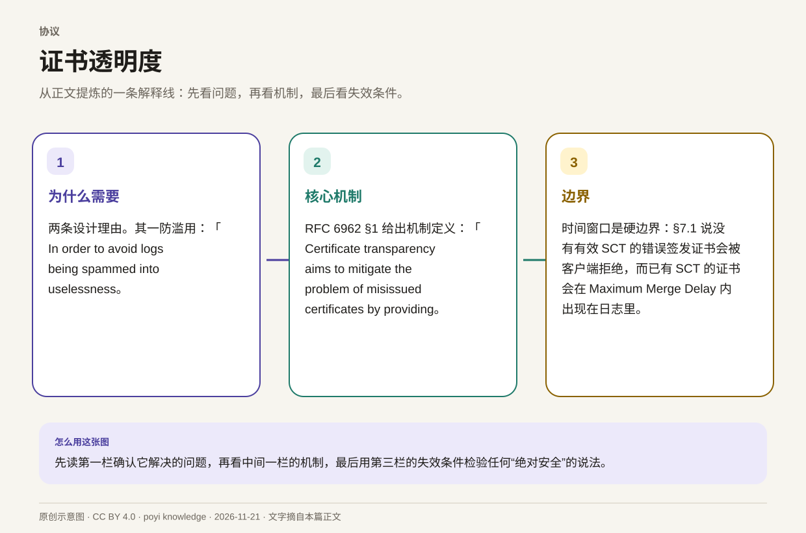
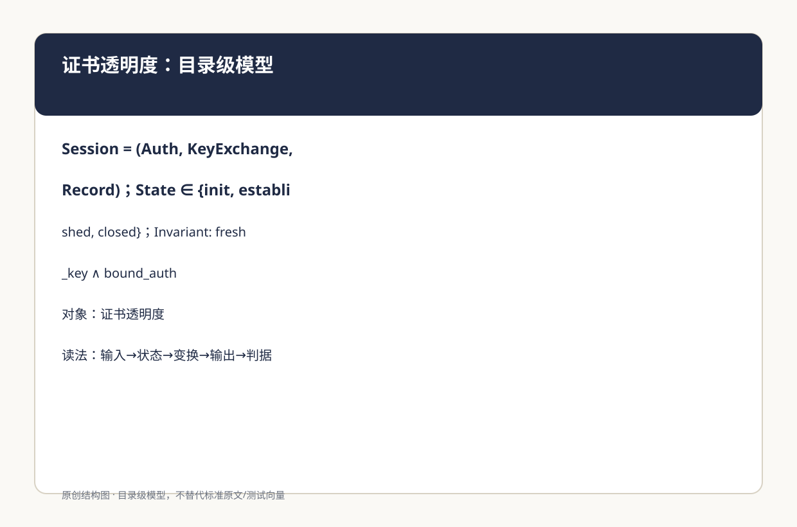

原理与机制
协议：证书透明度（Certificate Transparency）。RFC 6962 §1 给出机制定义：「Certificate transparency aims to mitigate the problem of misissued certificates by providing publicly auditable, append-only, untrusted logs of all issued certificates.」它不阻断错误签发，只保证可被发现——「The logs do not themselves prevent misissue, but they ensure that interested parties (particularly those named in certificates) can detect such misissuance.」提交后由日志签发时间戳作为凭证：「When a chain is submitted to a log, a signed timestamp is returned」。

为什么重要
两条设计理由。其一防滥用：「In order to avoid logs being spammed into uselessness, it is required that each chain is rooted in a known CA certificate.」其二把审计代价放到密码结构上：§2.1「Logs use a binary Merkle Hash Tree for efficient auditing.」§1 解释正是这棵树让追加只增可被证明——「The append-only property of each log is technically achieved using Merkle Trees」。检查还设计成异步以免拖慢握手：「The checking operation is asynchronous to allow TLS connections to proceed without delay」。
应用与实例
为在不预先签发的前提下记账，§3.1 引入预证书：「the CA submits a Precertificate that the log can use to create an entry that will be valid against the issued certificate.」并用毒化扩展使预证书不被普通校验接受；同节把预证书的签发意图视为有约束力——「misissuance of the Precertificate is considered equal to misissuance of the final certificate」。TLS 客户端一侧在 §5.2：客户端应校验 SCT 签名，且「TLS clients MUST reject SCTs whose timestamp is in the future.」监控者职责在 §5.3：「Monitors watch logs and check that they behave correctly.」

边界与攻击面
时间窗口是硬边界：§7.1 说没有有效 SCT 的错误签发证书会被客户端拒绝，而已有 SCT 的证书会在 Maximum Merge Delay 内出现在日志里，因此「the maximum period of time during which a misissued certificate can be used without being available for audit is the MMD.」日志自身可能作恶，§7.3 列出两种方式——不按时收录，以及「by presenting two different, conflicting views of the Merkle Tree」，并说明两类违反都可被公开检出：一旦同一日志出现两个冲突的签名树头，「this is cryptographic proof of that log's misbehavior.」
历史与背景
RFC 6962 于 2013 年 6 月发布，Category 标注 Experimental。§1 说明通用性与当时范围：「Note that this is a general mechanism, but in this document, we only describe its use for public TLS server certificates issued by public certificate authorities (CAs).」§2.1 记录哈希算法在该实验版本里固定为 SHA-256，并预期日后由日志自选算法；同节还注明叶子与节点的哈希不同，这一域分离「is required to give second preimage resistance.」。
逐步示例与核验
形式模型与复算步骤
[\mathrm{Adv}^{\Pi}_A(\lambda)\le n\cdot\mathrm{Adv}^{\mathrm{prf}}F(\lambda)+\varepsilon{\mathrm{aead}}(\lambda)]
证书透明度的公开参数、密钥/随机数与消息；变量说明：Π 协议，A 敌手，n 会话数，PRF/AEAD 为底层原语。1.把协议消息序列写成状态机。2.用混合论证逐个替换原语。3.把剩余优势归约到 PRF/AEAD 安全。边界：公式只覆盖已登记的参数与假设；参数取值、标准版本和实现细节仍以来源为准。
参考出处
- Wikipedia search entry for 证书透明度. https://zh.wikipedia.org/w/index.php?search=%E8%AF%81%E4%B9%A6%E9%80%8F%E6%98%8E%E5%BA%A6
- Handbook of Applied Cryptography (Menezes, van Oorschot, Vanstone). https://www.cacr.math.uwaterloo.ca/hac/